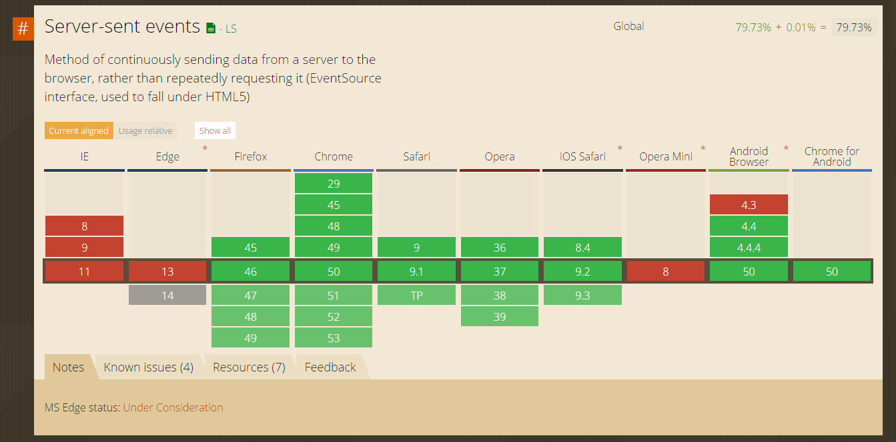

class: center, middle # Introduction to Server Sent Events --- # What's this all about - What is Server Sent Events (SSE)? - How does it work? - When would you use it? - Which platforms support it? - Working with SSE - Advantages/Disadvantages - Demo --- # What is Server Sent Events? - Uni-directional events Server->Client - [W3C Specification drafted in 2009.](https://www.w3.org/TR/2009/WD-eventsource-20090423/#server-sent-events-intro) - Part of HTML5 - [Supported by all major browsers*†‡♯](http://caniuse.com/#search=EventSource)  --- # How does it work? - HTTP streaming - MIME Type `text/event-stream` - Long lived connection - Events split by `\n` (or `\n\n` when used with `data` field) - Client events are `onmessage`, `onconnection` and `onerror`. - Simple specification, W3C spec ~9 pages. --- # When would you use it / Common use cases? - Push updates to users for real time data. - Broadcasting changes to a group of users of a common view - Anytime you have a feature that might cause users to hit 'Refresh' for new data, do it for them! # When NOT to use it - Mission/User critical updates - When any guaranteed delivery is required --- # Which platforms support it? ### Clients - Browsers - Any native clients that supports streaming HTTP! (Hint a lot) - Simple spec = Simple implementation - Many OSS Clients on GitHub ### Servers - [NodeJS](https://www.npmjs.com/package/sse) - [Ruby](http://api.rubyonrails.org/classes/ActionController/Live/SSE.html) - [Spring (not great)]() - ASP.NET ([SignalR](http://www.asp.net/signalr/overview/getting-started/introduction-to-signalr), [ServiceStack](https://github.com/ServiceStack/ServiceStack/wiki/Server-Events)) - Can be implemented on virtually all HTTP server stacks. - [~130 LoC Go implementation in a Gist](https://gist.github.com/ismasan/3fb75381cd2deb6bfa9c)! --- # Working with SSE - The Theme is "Simple". Example of using browser `EventSource`. ``` JavaScript var source = new EventSource('/event-stream?t=' + new Date().getTime()); source.onconnection = function(function(c) { console.log(c); }; source.onmessage = function(msg) { console.log(msg); }; // Or can be declared as source.addEventListener('error', function (e) { console.log("ERROR!", e); }); ``` - Message can be either text or structured (eg JSON), interpretation is up to client. --- # NodeJS Server ``` JavaScript var SSE = require('sse') , http = require('http'); var server = http.createServer(function(req, res) { res.writeHead(200, {'Content-Type': 'text/plain'}); res.end('okay'); }); server.listen(8080, '127.0.0.1', function() { var sse = new SSE(server); sse.on('connection', function(client) { client.send('hi there!'); }); }); ``` --- # Spring Boot Server ``` Java private final List<SseEmitter> emitters = new ArrayList<>(); @RequestMapping(path = "/sse", method = RequestMethod.GET) public SseEmitter stream() throws IOException { SseEmitter emitter = new SseEmitter(); emitters.add(emitter); emitter.onCompletion(() -> emitters.remove(emitter)); return emitter; } @ResponseBody @RequestMapping(path = "/chat", method = RequestMethod.POST) public Message sendMessage(@Valid Message message) { emitters.forEach((emitter) -> { try { emitter.send(message, MediaType.APPLICATION_JSON); } catch (IOException e) { emitter.complete(); emitters.remove(emitter); e.printStackTrace(); } }); return message; } ``` --- # Ruby on Rails Server ``` Ruby class MyController < ActionController::Base include ActionController::Live def index response.headers['Content-Type'] = 'text/event-stream' sse = SSE.new(response.stream, retry: 300, event: "event-name") sse.write({ name: 'John'}) sse.write({ name: 'John'}, id: 10) sse.write({ name: 'John'}, id: 10, event: "other-event") sse.write({ name: 'John'}, id: 10, event: "other-event", retry: 500) ensure sse.close end end ``` --- # ASP.NET Server (ServiceStack) - AppHost ``` CSharp public override void Configure(Container container) { this.Plugins.Add(new ServerEventsFeature()); } ``` - Service ``` CSharp public IServerEvents ServerEvents { get; set; } public GotoSlidePageResponse Get(GotoSlidePage request) { request.PageNumber++; ServerEvents.NotifyAll(request); return request.ConvertTo<GotoSlidePageResponse>(); } ``` --- # Advantages - Simple to implement, leverages HTTP - Decent client support for free - Can perform well. - Only does 1 thing, pushes data to clients. Again, simple. # Disadvantages - Doesn't work behind meddling proxies (streaming) - Only pushes data (single direction unlike Web Sockets). - Only works well for data easily transportable over HTTP. - Can't perform as well as Web Sockets (HTTP overhead). --- # Demo - This presentation uses SSE :) ``` JavaScript var slideshow = remark.create(); slideshow.on('beforeShowSlide', function (slide, e) { if(!changedExternal) $.getJSON('/slide?PageNumber=' + (slide.getSlideIndex() + 1) + '&From=' + window.subscription.id); }); var source = new EventSource('/event-stream?channel=slideShow&t=' + new Date().getTime()); $(source).handleServerEvents({ handlers: { onConnect: function (subscription) { window.subscription = subscription; }, GotoSlidePage: function (msg, e) { changedExternal = false; var sentByMe = msg.From == window.subscription.id; if(!sentByMe && msg.PageNumber != (slideshow.getCurrentSlideIndex() + 1)) { changedExternal = true; slideshow.gotoSlide(msg.PageNumber); } } } }); ``` --- class: center, middle # Thanks for your time.